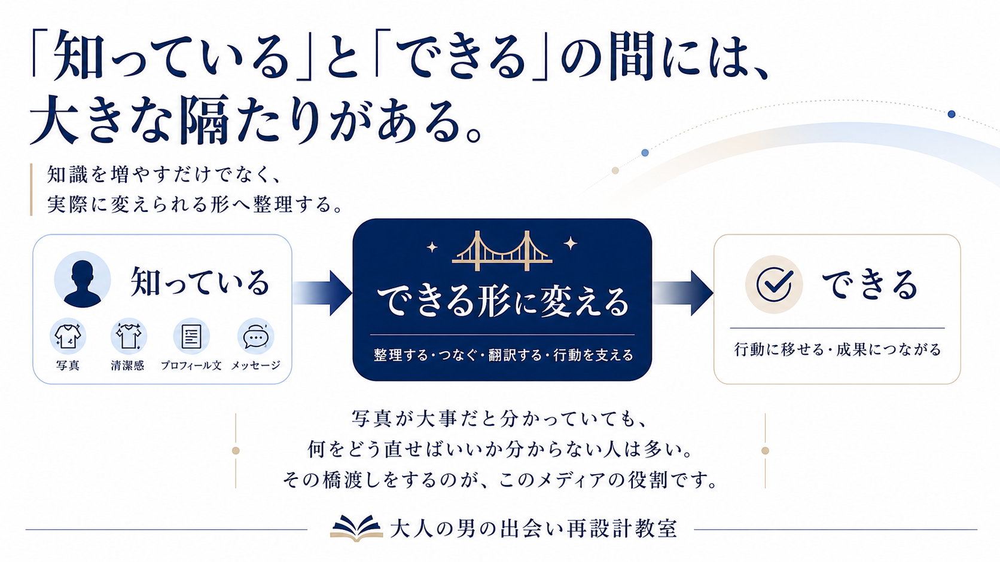

About
運営者情報
大人の男の出会い再設計教室は、40代・50代男性が出会いで損しないために、写真・清潔感・プロフィール文・メッセージの見せ方を整える実践メディアです。

このサイトについて
大人の男の出会い再設計教室は、40代・50代男性向けに、マッチングアプリや出会いの場での「見え方」を整えるための情報を発信しています。
年齢を若く見せることや、無理にモテる男性を演じることを目的にはしていません。大切にしているのは、今の自分を清潔に、自然に、女性に安心して伝わる形へ整えることです。
なぜこのメディアを作ったのか
40代・50代男性がマッチングアプリでうまくいかないとき、多くの人は「もう年齢的に無理なのかもしれない」と感じます。
もちろん、年齢が影響する場面はあります。ただ、実際には年齢そのものよりも、写真の暗さ、清潔感の伝わりにくさ、プロフィール文の弱さ、メッセージの距離感などで損していることも少なくありません。
このサイトでは、そうした「自分では気づきにくい減点ポイント」を、責めるのではなく、ひとつずつ整理していくことを大切にしています。
知識がないのではなく、実践に落とし込めない人が多い

40代・50代男性の出会い改善を考えるとき、私が強く感じるのは、うまくいかない人の多くは「何も知らない人」ではないということです。
写真が大事。清潔感が大事。プロフィール文やメッセージの印象が大事。こうしたことは、すでにどこかで読んでいる人が少なくありません。
ただ、本当に難しいのは、その知識を自分に合う形で実践に落とし込むことです。
「知っている」と「できる」の間には、大きな隔たりがあります。
写真が大事だと知っていても、実際にどんな写真を用意すればいいのか分からない。清潔感が大事だと分かっていても、自分のどこが損に見えているのか分からない。プロフィール文を直した方がいいと分かっていても、自分で書くと無難すぎたり、逆に距離感がズレたりする。
この「知っている」と「できる」の間を橋渡しすることが、私の役割だと考えています。
- 他撮り写真がいいと分かっていても、どう撮ればいいか分からない
- 清潔感が必要だと分かっていても、何を直せばいいか分からない
- プロフィール文を丁寧にした方がいいと分かっていても、自分で書くと無難すぎる
- メッセージは急がない方がいいと分かっていても、実際には距離感を間違えてしまう
こうした「分かっているのに変えられない」は、出会い改善ではよく起こります。
以前から、出会い系・マッチングアプリのプロフィール改善に関する情報発信や販売を行ってきました。形は変わっても、男性が出会いで損しない見せ方を整えることには、5年以上向き合ってきました。
だからこのサイトでは、知識を増やすこと以上に、その人が実際に動ける形へ整理することを大切にしています。
写真なら、何をやめて何を撮るか。プロフィール文なら、どこを削って何を足すか。メッセージなら、何を送らず、どう始めるか。
抽象論ではなく、実際に変えられる単位まで落とし込む。それが、このメディアとプロフィール再設計相談で大切にしていることです。
大切にしている考え方
- 若作りではなく、自然な若々しさを整える
- 煽りやモテ自慢ではなく、現実的な改善を伝える
- 年齢を否定せず、今の自分の見せ方を整える
- 写真・清潔感・プロフィール文・メッセージを一体で見る
- 読者の恥ずかしさや不安も含めて、丁寧に扱う
運営者
運営者：澄川まこと｜大人の男の出会い再設計教室
40代・50代男性向けに、マッチングアプリや出会いの場で損しないための「見せ方」を整える情報発信と個別相談を行っています。
これまで、出会い系・マッチングアプリのプロフィール改善に関する情報発信や販売を行い、プロフィール写真、自己紹介文、メッセージの見せ方について5年以上向き合ってきました。
その中で強く感じてきたのは、うまくいかない男性の多くが、何も知らないわけではないということです。写真が大事、清潔感が大事、プロフィール文が大事だと知っていても、それを自分に合う形で実践に落とし込めない。そこに大きな壁があります。
だからこのサイトでは、単なる恋愛ノウハウではなく、「知っていること」を「実際にできる形」へ橋渡しすることを大切にしています。
煽りやモテ自慢ではなく、写真・清潔感・プロフィール文・メッセージを現実的に整える。年齢を否定するのではなく、女性に安心して伝わる見せ方へ再設計する。それが、このメディアの方針です。
お問い合わせ
記事内容やプロフィール再設計相談についてのお問い合わせは、以下のメールアドレスまでお願いいたします。